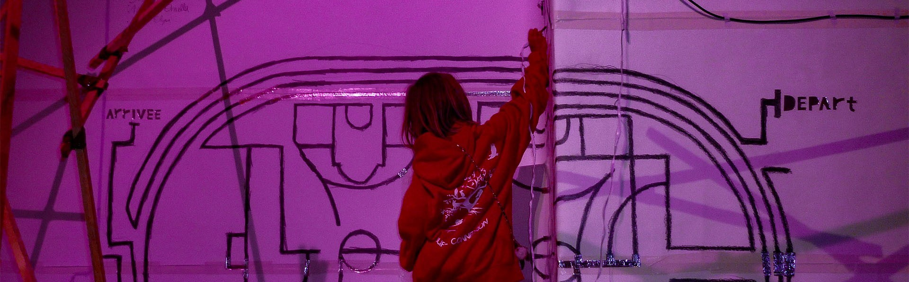
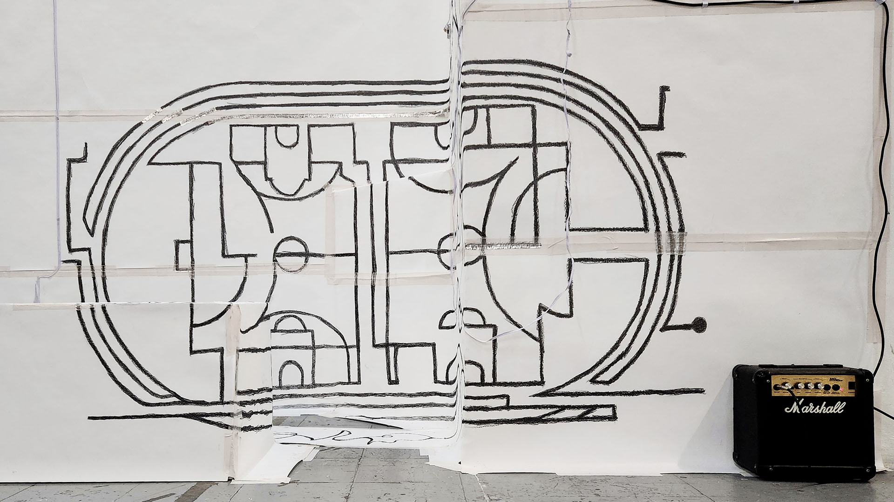
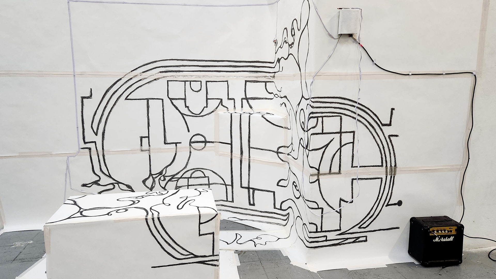
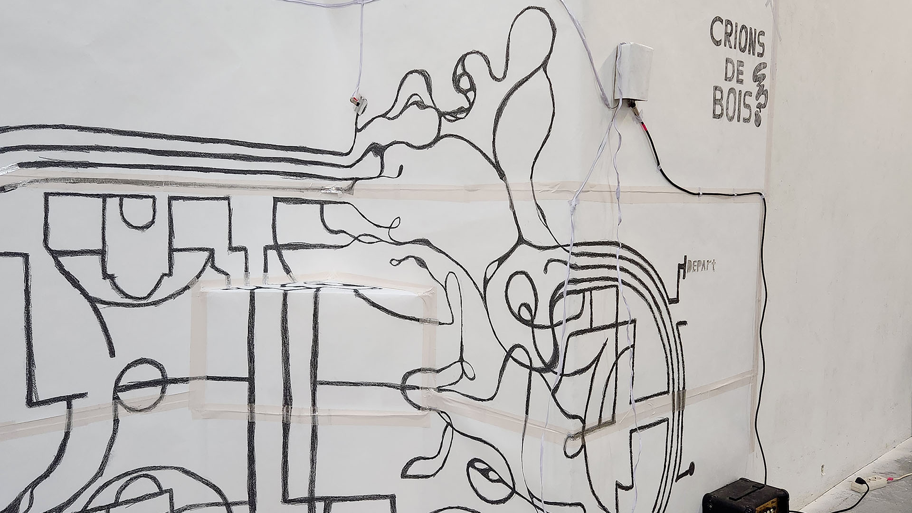
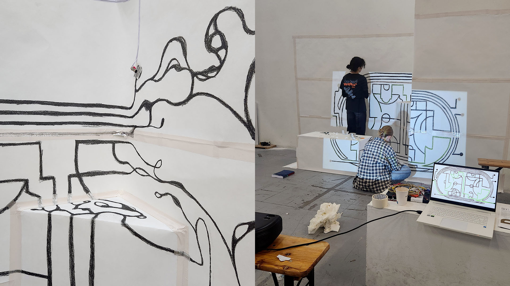
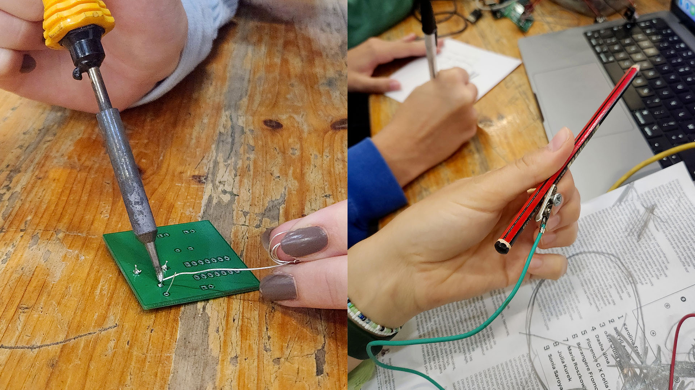
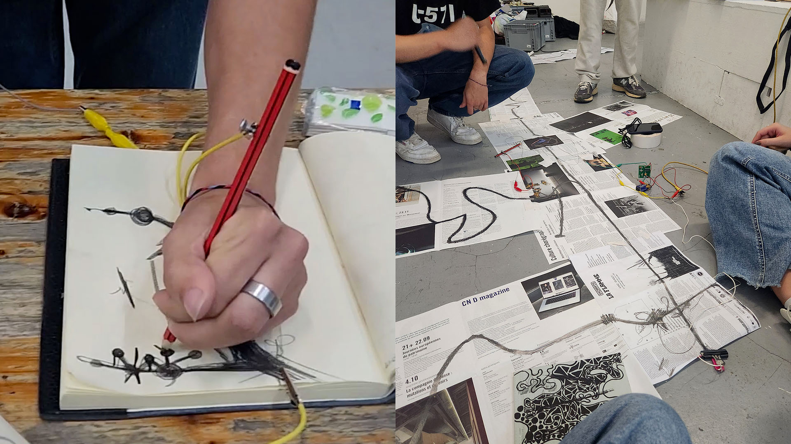
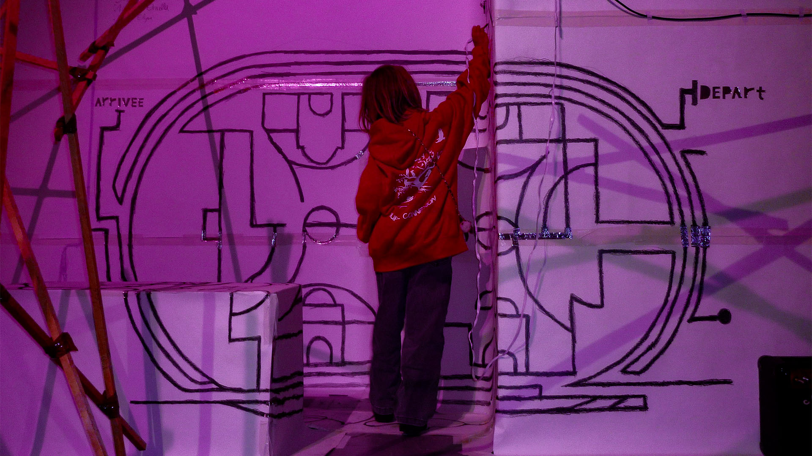

Crions de bois
Septembre 2024
Une fresque interactive qui transforme le geste en son et invite à faire du bruiiiiiit !
Crions de bois est une fresque sonore interactive réalisée dans le cadre de la kermesse Sport & Noise organisée à Mains d’Oeuvres de Saint-Ouen, en collaboratio avec BrutPop. Inspirée des Jeux Paralympiques de 2024, cette initiative collective, inclusive et expérimentale avait pour mot d’ordre : faire du bruiiiiiit !
Avec Ornella Antony et Elysa Picquendar, nous avons conçu une installation interactive à partir d’un objet du quotidien, sous forme de fresque-labyrinthe. Dessinée au graphite conducteur, elle déclenche des sons en temps réel au contact d’un crayon, transformant le geste graphique en expérience sonore. Inspirée des terrains de sport, la composition joue avec l’anamorphose et la superposition de lignes pour créer un espace à la fois ludique et désorientant.
Entre bricolage électronique, détournement de circuits et scénographie de récupération, Crions de bois explore une forme d’arte povera numérique où le son, le geste et l’espace deviennent des outils d’interaction et de convivialité.






